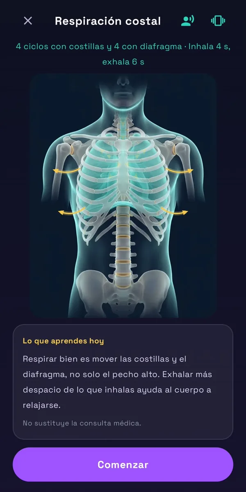
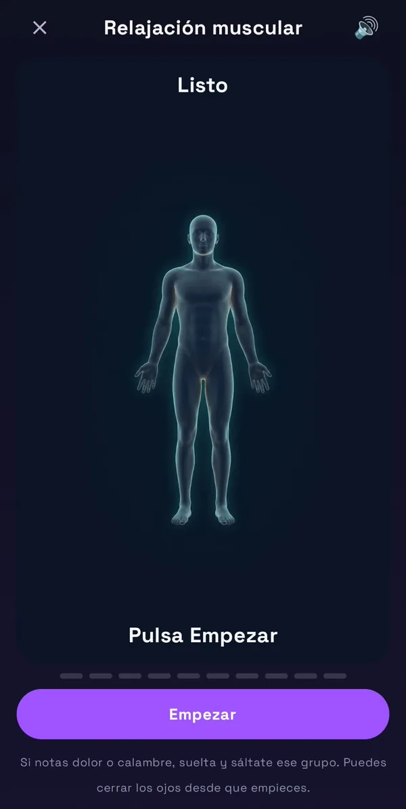

Por DreamCode Studio · Actualizado el 25 de octubre de 2026
Aviso: esta guía es informativa y no sustituye la consulta con un profesional de la salud. Si tienes una enfermedad respiratoria o cardíaca, estás embarazada o te mareas con facilidad, consulta antes a tu médico. Si te mareas o te sientes mal durante un ejercicio, para y respira con normalidad.
En pocas palabras: respirar despacio, y sobre todo alargar la exhalación, ayuda al cuerpo a pasar a un estado de calma. Bastan unos minutos antes de acostarte. No hay una técnica mejor para todos: prueba varias y quédate con la que te resulte más cómoda.
Por qué respirar despacio relaja
Normalmente respiramos entre 12 y 20 veces por minuto. Cuando bajamos el ritmo, de forma tranquila y sin forzar, se activa la parte del sistema nervioso que favorece el descanso, la que actúa a través del nervio vago.
- Una revisión sistemática de 2018 sobre la respiración lenta encontró que se asocia a una mayor variabilidad de la frecuencia cardíaca (un indicador de relajación), a más sensación de calma y a menos ansiedad.
- En un estudio pequeño con personas con insomnio, practicar 20 minutos de respiración lenta, unas 6 respiraciones por minuto, antes de acostarse se relacionó con dormirse antes y despertarse menos durante la noche.
- En un ensayo de 2023, cinco minutos diarios de ejercicios de respiración mejoraron el estado de ánimo más que la meditación. El mejor resultado fue para la técnica centrada en una exhalación larga.
La investigación todavía es limitada: muchos estudios son pequeños y no todas las técnicas se han estudiado igual. Te lo indicamos en cada ejercicio.
Los 6 ejercicios
Respiración 4-7-8 Gratis
Inhala 4 · Retén 7 · Exhala 8
Inhala por la nariz contando 4, retén el aire contando 7 y suéltalo despacio por la boca contando 8. La exhalación larga es la clave. Un estudio pequeño con adultos jóvenes sanos la relacionó con mejoras en la variabilidad de la frecuencia cardíaca y la tensión arterial. Si retener 7 te resulta difícil, cuenta más rápido.
Respiración cuadrada Premium
Inhala 4 · Retén 4 · Exhala 4 · Pausa 4
Cuatro tiempos iguales, como los lados de un cuadrado. Es fácil de recordar y ayuda a centrar la atención, por eso es útil cuando la mente va acelerada. Se incluyó en el ensayo de 2023, donde también mejoró el estado de ánimo.
Respiración coherente Premium
Inhala 5 · Exhala 5
Unas 6 respiraciones por minuto, sin pausas. Es el ritmo que más se ha estudiado: en muchas personas maximiza la variabilidad de la frecuencia cardíaca. Al no retener el aire, es de las más suaves y fáciles de mantener varios minutos.
Suspiro largo Premium
Inhala 4 · Exhala 8
La exhalación dura el doble que la inhalación. Se basa en la misma idea que el suspiro cíclico: una exhalación larga para soltar la tensión acumulada del día. Al no retener el aire, es muy fácil de seguir.
Suspiro cíclico Premium Nuevo
Dos inhalaciones cortas · Una exhalación larga
Inhala por la nariz, añade una segunda inhalación corta para llenar del todo los pulmones y suelta el aire despacio por la boca, hasta vaciarlos. Es la técnica que mejor resultado obtuvo en el ensayo de 2023: con cinco minutos al día mejoró el estado de ánimo y bajó la frecuencia respiratoria en reposo.
Pranayama · Nadi Shodhana Premium
Respiración alterna por las fosas nasales
Una técnica tradicional del yoga: tapas suavemente un orificio de la nariz, inhalas por el otro y alternas en cada respiración. Una revisión de ensayos clínicos encontró efectos favorables sobre el sistema nervioso y la tensión arterial, aunque con estudios pequeños. Requiere un poco más de práctica.
Cuál elegir
| Si… | Prueba |
|---|---|
| Es tu primera vez | Respiración coherente o 4-7-8 |
| La mente no para | Respiración cuadrada |
| Vienes de un día tenso | Suspiro cíclico o suspiro largo |
| No te gusta retener el aire | Coherente, suspiro largo o suspiro cíclico |
| Ya practicas yoga | Nadi Shodhana |
Cómo practicar
Lucero te lo resume en una frase: suelta el aire más despacio de lo que lo tomas. Con eso ya estás haciendo lo más importante. Y ahora, paso a paso:
- Ponte cómodo. Sentado o tumbado en la cama, con los hombros sueltos.
- Respira por la nariz siempre que puedas, y lleva el aire hacia el abdomen, no solo al pecho.
- No fuerces. La respiración debe ser suave. Si te falta el aire, acorta los tiempos.
- Dedícale de 3 a 5 minutos. Es mejor poco cada noche que mucho de vez en cuando.
- Al terminar, deja que la respiración vuelva sola a su ritmo y quédate en silencio o con un sonido suave.
Precauciones
- Si notas mareo, hormigueo o falta de aire, para y respira con normalidad.
- Las técnicas que retienen el aire (4-7-8 y cuadrada) pueden no ser adecuadas en el embarazo, ni si tienes asma, EPOC u otra enfermedad respiratoria o cardíaca. Consúltalo con tu médico; mientras tanto, elige la coherente o el suspiro largo, que no retienen.
- A algunas personas con ansiedad, fijarse en la respiración les inquieta más. Si te pasa, prueba con un sonido o una meditación guiada.
- No practiques mientras conduces ni en situaciones en las que necesites estar alerta.
Aprende a respirar con Lucero
En Sleep Audio, Lucero, nuestra estrella guía, te acompaña en «Aprende a respirar»: un recorrido de 5 pasos para conocer cómo respiras y mejorar poco a poco.
- Mide cómo respiras Gratis: tocas la pantalla en cada respiración durante 1 minuto.
- Nariz o boca Gratis: 30 segundos por la boca y 30 por la nariz, con una figura animada que muestra el aire.
- Respiración costal Premium: costillas y diafragma, con voz y vibración.
- Lista de 10 preguntas Premium: para conocer tus hábitos al respirar. No es un diagnóstico.
- Plan de 7 días Premium: un ejercicio al día, con estrellas y racha. El día 7 vuelves a medir y la app compara con el día 1. Aviso diario opcional a las 21:00.

Aprende a respirar

Nariz o boca

Respiración costal

Relajación muscular
Toca una captura para verla en grande. Cada paso incluye «Lo que aprendes hoy» y figuras del cuerpo que muestran por dónde entra y sale el aire.
Además:
- Respiración 4-7-8, gratis, guiada en pantalla con voz y vibración suave para marcar el ritmo.
- Los 6 ejercicios Premium, con figuras del cuerpo que se iluminan y el aire que entra y sale.
- Relajación muscular Premium: tensar y soltar, de los pies a la cara, en 10 grupos guiados.
- «Al terminar, seguir con mi sonido» Premium: cuando acaba el ejercicio, empieza tu última mezcla con el temporizador.
- Con la Rutina del sueño Premium, el aviso de 20 minutos antes de dormir abre directamente un ejercicio de respiración.
Preguntas frecuentes
¿Cuánto tiempo tengo que practicar?
Con 3 a 5 minutos antes de dormir es suficiente para empezar. En los estudios se suele practicar entre 5 y 20 minutos.
¿Puedo hacerlo ya tumbado en la cama?
Sí, es lo más práctico. Si te duermes antes de terminar, no pasa nada: era el objetivo.
¿Cuándo notaré el efecto?
Muchas personas notan más calma desde la primera vez. El beneficio para el sueño suele necesitar práctica regular durante varias semanas.
¿Sustituye a un tratamiento o a la medicación?
No. Es una ayuda para relajarte, no un tratamiento. No dejes ni cambies ninguna medicación sin hablar con tu médico.
Fuentes
- Zaccaro, A. et al. How breath-control can change your life: a systematic review on psycho-physiological correlates of slow breathing. Frontiers in Human Neuroscience, 2018.
- Tsai, H. J. et al. Efficacy of paced breathing for insomnia: enhances vagal activity and improves sleep quality. Psychophysiology, 2015.
- Balban, M. Y. et al. Brief structured respiration practices enhance mood and reduce physiological arousal. Cell Reports Medicine, 2023.
- Vierra, J. et al. Effects of sleep deprivation and 4-7-8 breathing control on heart rate variability, blood pressure, blood glucose, and endothelial function in healthy young adults. Physiological Reports, 2022.
- Lehrer, P. M. y Gevirtz, R. Heart rate variability biofeedback: how and why does it work? Frontiers in Psychology, 2014.
- Ghiya, S. Alternate nostril breathing: a systematic review of clinical trials. International Journal of Research in Medical Sciences, 2017.
Esta guía es informativa y no sustituye la consulta con un profesional de la salud. Sleep Audio no es un producto sanitario ni sirve para diagnosticar o tratar ninguna enfermedad.